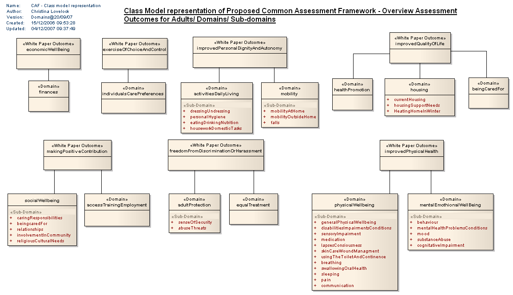

CAF - Class model representation : logical diagram
| Created: | 15/12/2006 09:53:28 |
| Modified: | 04/12/2007 09:37:49 |
 Project: Project: |
|
| Advanced: |
Updated 30th Jan, to reflect CAF as specified in Outline Spec v2.3 26 Jan, taken to Adults Reference Group<br />Updated 27th Feb 2007 to reflect CAF after Reference group comments collated.<br />Updated 10th April 2007, to reflect additions by Matt Fagg (DH) policy lead (new: falls, general physical wellbeing, caring responsibilities). 20/07/07 added sensory impairment as this had been missed off. 20/09/07 added new domain Being Cared For introduced by DH in version 0.15 of information set